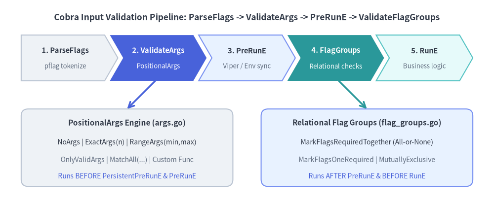
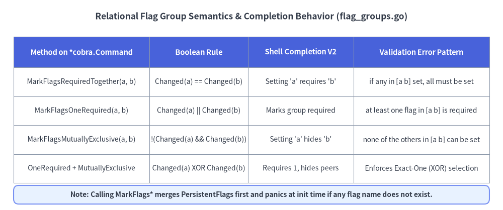

Positional Arguments & Flag Group Constraints
In production CLIs, input validation should happen declaratively at the command boundary rather than cluttering business logic with repetitive if len(args) and if flagA != "" && flagB != "" checks. Cobra v1.10.2 provides two complementary declarative validation engines: PositionalArgs validators (args.go) for positional arguments and Relational Flag Group annotations (flag_groups.go) for multi-flag constraints.

Source Code
from drawlib.canvas import save, setup
from drawlib.lines import line
from drawlib.shapes import rectangle
from drawlib.smartarts import ChevronProcess
from drawlib.styles import Styles
from drawlib.text import text
setup(width=140, height=58)
text(
(70, 53),
"Cobra Input Validation Pipeline: ParseFlags -> ValidateArgs -> PreRunE -> ValidateFlagGroups",
style=Styles.DarkBold.patch(text_size=12.5),
)
# Top pipeline chevrons
pipe = ChevronProcess(
style=Styles.Neutral,
text_style=Styles.DarkBold.patch(text_size=10.5),
description_style=Styles.Muted.patch(text_size=9.5),
corner_angle=60.0,
spacing=1.5,
flat_left_end=True,
)
pipe.add("1. ParseFlags", description="pflag tokenize")
pipe.add(
"2. ValidateArgs",
description="PositionalArgs",
style=Styles.PrimaryFlat,
text_style=Styles.WhiteBold.patch(text_size=10.5),
description_style=Styles.White.patch(text_size=9.5),
)
pipe.add("3. PreRunE", description="Viper / Env sync", style=Styles.PrimaryNeutral)
pipe.add(
"4. FlagGroups",
description="Relational checks",
style=Styles.SecondaryFlat,
text_style=Styles.WhiteBold.patch(text_size=10.5),
description_style=Styles.White.patch(text_size=9.5),
)
pipe.add("5. RunE", description="Business logic", style=Styles.SecondaryNeutral)
pipe.draw(xy=(6, 35), width=128, height=13)
# Bottom detail cards
rectangle((36, 16), width=60, height=22, style=Styles.Neutral.patch(shape_r=2.0))
text((36, 23), "PositionalArgs Engine (args.go)", style=Styles.DarkBold.patch(text_size=11.0))
text((36, 17.5), "NoArgs | ExactArgs(n) | RangeArgs(min,max)", style=Styles.Dark.patch(text_size=10.0))
text((36, 12.5), "OnlyValidArgs | MatchAll(...) | Custom Func", style=Styles.Muted.patch(text_size=10.0))
text((36, 8.0), "Runs BEFORE PersistentPreRunE & PreRunE", style=Styles.Primary.patch(text_size=10.0))
rectangle((104, 16), width=60, height=22, style=Styles.PrimaryNeutral.patch(shape_r=2.0))
text((104, 23), "Relational Flag Groups (flag_groups.go)", style=Styles.DarkBold.patch(text_size=11.0))
text((104, 17.5), "MarkFlagsRequiredTogether (All-or-None)", style=Styles.Dark.patch(text_size=10.0))
text((104, 12.5), "MarkFlagsOneRequired | MutuallyExclusive", style=Styles.Muted.patch(text_size=10.0))
text((104, 8.0), "Runs AFTER PreRunE & BEFORE RunE", style=Styles.Primary.patch(text_size=10.0))
line((44, 35), (36, 27), arrow_head="->", style=Styles.PrimaryBold)
line((96, 35), (104, 27), arrow_head="->", style=Styles.SecondaryBold)
save()
1. Built-in PositionalArgs Validators (args.go)
Every cobra.Command exposes an Args field of type cobra.PositionalArgs:
type PositionalArgs func(cmd *Command, args []string) error
During cmd.Execute(), after c.ParseFlags(a) strips all recognized flags from the raw slice, Cobra passes the remaining non-flag arguments (argWoFlags) into c.ValidateArgs(argWoFlags).
Complete Catalog of Built-in Validators
| Validator Function | Validation Rule | Error Returned When Violated |
|---|---|---|
cobra.NoArgs |
len(args) == 0 |
unknown command "<arg0>" for "<cmd path>" |
cobra.ArbitraryArgs |
Accepts any args (nil error) |
Never returns an error |
cobra.ExactArgs(n) |
len(args) == n |
accepts <n> arg(s), received <len> |
cobra.MinimumNArgs(n) |
len(args) >= n |
requires at least <n> arg(s), only received <len> |
cobra.MaximumNArgs(n) |
len(args) <= n |
accepts at most <n> arg(s), received <len> |
cobra.RangeArgs(min, max) |
min <= len(args) <= max |
accepts between <min> and <max> arg(s), received <len> |
cobra.OnlyValidArgs |
Every arg $\in$ cmd.ValidArgs |
invalid argument "<arg>" for "<cmd path>" (+ suggestions) |
cobra.MatchAll(pargs...) |
Logical AND across all pargs |
First non-nil error returned in sequence |
cobra.ExactValidArgs(n) |
Deprecated: MatchAll(ExactArgs(n), OnlyValidArgs) |
Count error or invalid member error |
The legacyArgs Trap on Leaf Commands
When cmd.Args is left nil, Cobra falls back to the internal legacyArgs validator (args.go:28-39):
- Root command with subcommands: Rejects stray positional arguments with
unknown command %q for %qand Levenshtein suggestions. - Any subcommand (or root without subcommands): Always returns
nil—silently accepting arbitrary extra arguments!
Enterprise Best Practice: Always set
Args: cobra.NoArgsexplicitly on leaf subcommands that take only flags. WithoutArgs: cobra.NoArgs, runningmycli cluster list --output json extra-typo-argsilently ignoresextra-typo-arginstead of alerting the user.
2. Composing Validators with MatchAll & OnlyValidArgs
cobra.OnlyValidArgs inspects cmd.ValidArgs. In Cobra v1.10.2, ValidArgs entries may contain a tab-separated description ("production\tProduction Kubernetes cluster") used by Shell Completion V2. OnlyValidArgs automatically strips everything after the first \t (strings.SplitN(v, "\t", 2)[0]) before checking membership.
By combining cobra.MatchAll with custom PositionalArgs closures, you can build reusable, composable domain validators:
package cluster
import (
"fmt"
"regexp"
"github.com/spf13/cobra"
)
var k8sNameRegex = regexp.MustCompile(`^[a-z0-9]([-a-z0-9]*[a-z0-9])?$`)
// ValidateDNS1123Subdomain ensures positional arg[idx] is a valid RFC 1123 name.
func ValidateDNS1123Subdomain(idx int) cobra.PositionalArgs {
return func(cmd *cobra.Command, args []string) error {
if idx >= len(args) {
return nil
}
if !k8sNameRegex.MatchString(args[idx]) {
return fmt.Errorf(
"argument %q at position %d must be a lower-case DNS-1123 label",
args[idx], idx,
)
}
return nil
}
}
func NewPromoteCommand() *cobra.Command {
cmd := &cobra.Command{
Use: "promote <environment> <cluster-name>",
Short: "Promote a cluster within a target environment",
ValidArgs: []string{
"dev\tDevelopment sandbox environment",
"staging\tPre-production staging environment",
"prod\tProduction high-availability environment",
},
// Compose arity check + custom regex check on arg[1]
Args: cobra.MatchAll(
cobra.ExactArgs(2),
func(cmd *cobra.Command, args []string) error {
// Validate arg[0] against ValidArgs while allowing arg[1] to be a custom name
return cobra.OnlyValidArgs(cmd, args[:1])
},
ValidateDNS1123Subdomain(1),
),
RunE: func(cmd *cobra.Command, args []string) error {
env, clusterName := args[0], args[1]
cmd.Printf("Promoting cluster %q in %q\n", clusterName, env)
return nil
},
}
return cmd
}
Handling -- Dash Passthrough Arguments (ArgsLenAtDash)
When wrapping remote execution commands (such as kubectl exec pod-1 -- /bin/sh -c "echo hi"), pflag stops parsing flags at --. Inside your PositionalArgs validator or RunE, call cmd.ArgsLenAtDash():
- Returns
-1if--was not present on the command line. - Returns
k >= 0indicating the index inargswhere--appeared (args[:k]are target arguments before--, andargs[k:]are the passthrough command tokens after--).
3. Relational Flag Group Constraints (flag_groups.go)
Real-world CLIs frequently require relational rules across multiple flags: authentication credentials that must be supplied together, output formats that cannot be combined, or input sources where at least one must be chosen. Cobra models these via three pflag.Flag.Annotations keys in flag_groups.go:

Source Code
from drawlib.canvas import save, setup
from drawlib.shapes import rectangle
from drawlib.smartarts import Table
from drawlib.styles import Styles
from drawlib.text import text
setup(width=148, height=62)
text(
(74, 57),
"Relational Flag Group Semantics & Completion Behavior (flag_groups.go)",
style=Styles.DarkBold.patch(text_size=12.5),
)
tbl = Table(
cell_style=Styles.White,
text_style=Styles.Dark.patch(text_size=10.0),
header_cell_style=Styles.PrimaryFlat,
header_text_style=Styles.WhiteBold.patch(text_size=10.5),
border_style=Styles.MutedThin,
)
rows = [
["Method on *cobra.Command", "Boolean Rule", "Shell Completion V2", "Validation Error Pattern"],
[
"MarkFlagsRequiredTogether(a, b)",
"Changed(a) == Changed(b)",
"Setting 'a' requires 'b'",
"if any in [a b] set, all must be set",
],
[
"MarkFlagsOneRequired(a, b)",
"Changed(a) || Changed(b)",
"Marks group required",
"at least one flag in [a b] is required",
],
[
"MarkFlagsMutuallyExclusive(a, b)",
"!(Changed(a) && Changed(b))",
"Setting 'a' hides 'b'",
"none of the others in [a b] can be set",
],
[
"OneRequired + MutuallyExclusive",
"Changed(a) XOR Changed(b)",
"Requires 1, hides peers",
"Enforces Exact-One (XOR) selection",
],
]
tbl.draw_flexible(
xy=(4, 51),
column_widths=[40, 29, 31, 40],
row_heights=[9, 8.5, 8.5, 8.5, 8.5],
data=rows,
align="top_left",
)
rectangle((74, 4.5), width=140, height=5.5, style=Styles.PrimaryNeutral.patch(shape_r=1.5))
text(
(74, 4.5),
"Note: Calling MarkFlags* merges PersistentFlags first and panics at init time if any flag name does not exist.",
style=Styles.DarkBold.patch(text_size=10.0),
)
save()
The Three Relational Primitives + Exact-One (XOR) Pattern
- Co-occurrence (
MarkFlagsRequiredTogether(names ...string)):- Attaches
cobra_annotation_required_if_others_set. - Passes if zero flags in the group are set, or if all flags in the group are set (
len(unset) == len(group) || len(unset) == 0). - Ideal for
--tls-cert+--tls-key, or--username+--password.
- Attaches
- At-Least-One (
MarkFlagsOneRequired(names ...string)):- Attaches
cobra_annotation_one_required. - Fails unless at least one flag in the group has
pflag.Changed == true. - Ideal when a command accepts input from
--file,--stdin, or--url.
- Attaches
- At-Most-One (
MarkFlagsMutuallyExclusive(names ...string)):- Attaches
cobra_annotation_mutually_exclusive. - Fails if two or more flags in the group have
pflag.Changed == true. - Ideal for mutually exclusive modes like
--json,--yaml, and--table.
- Attaches
- Exact-One / XOR (Combining
OneRequired+MutuallyExclusive):- Because each call appends a group string to the flag's annotation slice, calling both
MarkFlagsOneRequired("file", "stdin")andMarkFlagsMutuallyExclusive("file", "stdin")enforces that exactly one of--fileor--stdinis provided.
- Because each call appends a group string to the flag's annotation slice, calling both
Complete Example: Combining Flag Groups in a Deploy Command
func NewDeployCommand() *cobra.Command {
var (
manifestFile string
fromStdin bool
tlsCert string
tlsKey string
outJSON bool
outYAML bool
)
cmd := &cobra.Command{
Use: "deploy <service-name>",
Short: "Deploy a service manifest with strict flag group validation",
Args: cobra.ExactArgs(1),
RunE: func(cmd *cobra.Command, args []string) error {
cmd.Printf("Deploying service %s...\n", args[0])
return nil
},
}
f := cmd.Flags()
f.StringVarP(&manifestFile, "file", "f", "", "Path to manifest file")
f.BoolVar(&fromStdin, "stdin", false, "Read manifest from standard input")
f.StringVar(&tlsCert, "tls-cert", "", "Client TLS certificate path")
f.StringVar(&tlsKey, "tls-key", "", "Client TLS private key path")
f.BoolVar(&outJSON, "json", false, "Format output as JSON")
f.BoolVar(&outYAML, "yaml", false, "Format output as YAML")
// 1. Exact-One (XOR): User MUST supply either --file or --stdin, never both
cmd.MarkFlagsOneRequired("file", "stdin")
cmd.MarkFlagsMutuallyExclusive("file", "stdin")
// 2. All-or-None: --tls-cert and --tls-key must be provided together
cmd.MarkFlagsRequiredTogether("tls-cert", "tls-key")
// 3. At-Most-One: --json and --yaml cannot be combined
cmd.MarkFlagsMutuallyExclusive("json", "yaml")
return cmd
}
4. Execution Timing & Dynamic Completion Enforcement
Understanding when Cobra runs each validator inside (*Command).execute() (command.go:968-1013) prevents subtle bugs when integrating with Viper or environment variables:
ValidateArgsruns BEFOREPersistentPreRunEandPreRunE(command.go:968). If positional arguments are invalid, hooks likePersistentPreRunE(which might initialize network clients or database connections) are skipped immediately.ValidateRequiredFlagsandValidateFlagGroupsrun AFTERPreRunEand BEFORERunE(command.go:1007-1012).- Why this matters: Because flag group validation inspects
pflag.ChangedafterPersistentPreRunEandPreRunEfinish, yourPersistentPreRunEhook can copy values from Viper or environment variables intocmd.Flags().Set(name, val)(which flipspflag.Changed = true), satisfyingMarkFlagRequiredandMarkFlagsOneRequiredautomatically!
- Why this matters: Because flag group validation inspects
- Interactive Tab-Completion Awareness (
enforceFlagGroupsForCompletion):- Before computing flag completions (
flag_groups.go:225-290), Cobra inspects current flag group annotations: - If one flag in a
MutuallyExclusivegroup is already present on the command line, Cobra setsflag.Hidden = trueon all sibling flags in that group so<Tab>never suggests conflicting flags. - If one flag in a
RequiredTogethergroup is present, Cobra marks the remaining flags in that group as required so<Tab>prioritizes suggesting them first.
- Before computing flag completions (